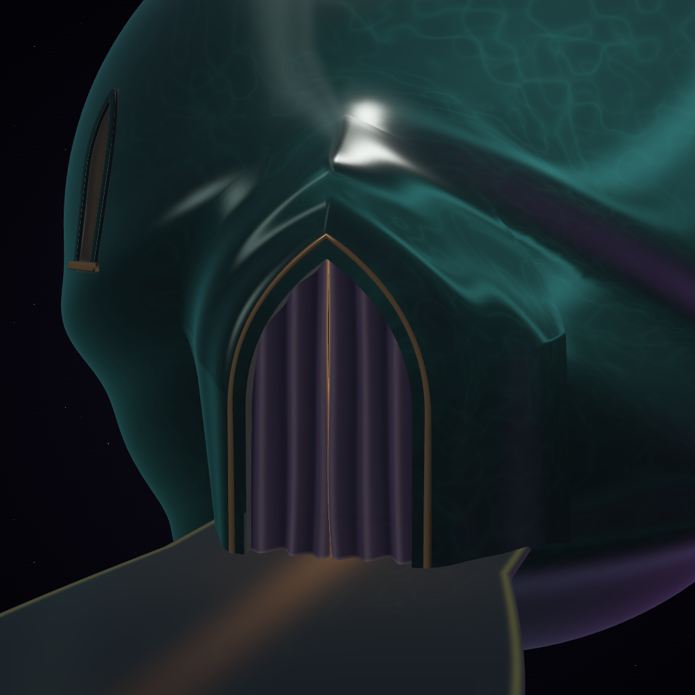
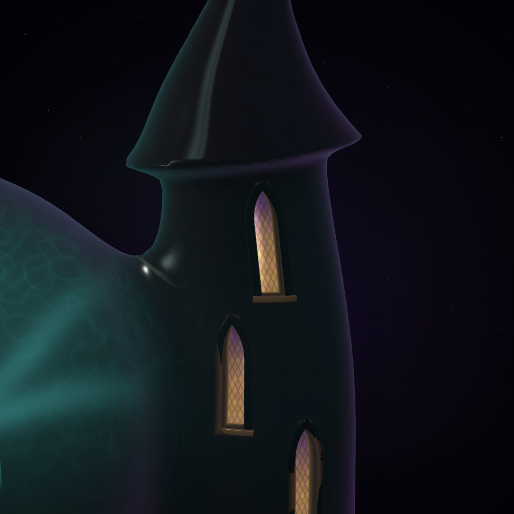
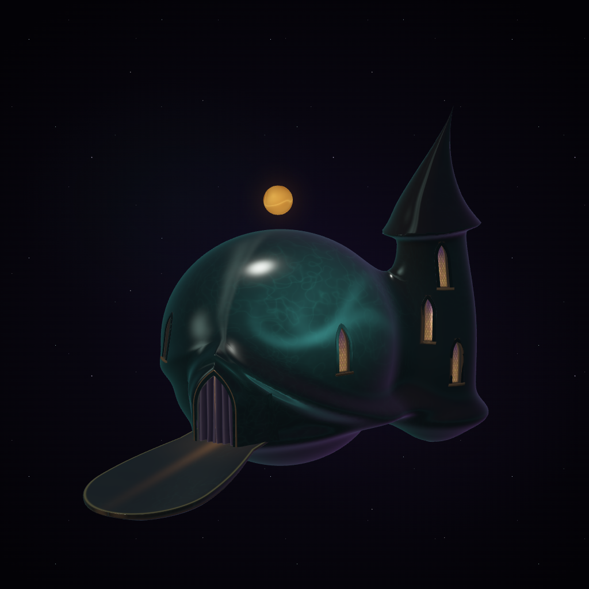
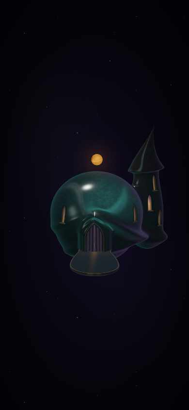
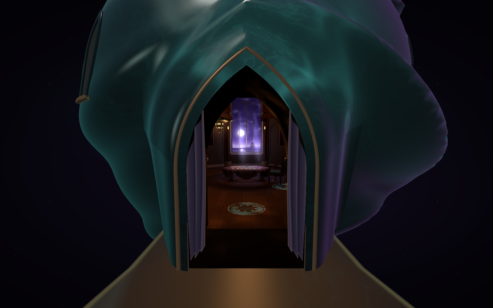

Concept B / Liquid Sanctuary · Justering 20. oktober 2026
Tydeligere strømninger. Platået rett mot oss.
De eksisterende turkise strømningene lyser tydeligere inne i glasset. Platåets venstrebøy er rettet ut, slik at det peker fra døren mot kameraet. Resten av bygningen og kameravinkelen er beholdt.
Originalt konsept B — designfasitenNå — tydeligere indre strømninger og rettet platå
Før/etter-bildene har identisk kamera, 1024 × 1024, DPR 1 og animasjonstid 8,05 s. Konseptbildet er kunst; bare detaljkolonnen er beskåret fra sammenligningen.
Se etter: om strømningene er tydelige nok i normal størrelse og om platået nå peker naturlig fra døren mot deg. Åpne den levende forhåndsvisningen for å vurdere bevegelsen.
Strømningene og refleksjonene er fortsatt enklere enn i konseptet. Den eksisterende skjøten rundt inngangen er uendret. Denne justeringen legger ikke til nye effekter eller endrer resten av bygningen.
Detaljer

Inngang og platå — den samme døråpningen og ganglinjen inn i rommet
Tårn — samme form, rolig overflate og tydeligere indre mønsterSidevinkel og smal skjerm

Sidevinkel — platåets dybde og uendrede lengde
Smal visning, desktop-emuleringKontroll av inngangen

Faktisk integrert inngang — samme rom og overgang gjennom dørenEndringer og kontroller · Måleresultater · Arkivert forrige versjon